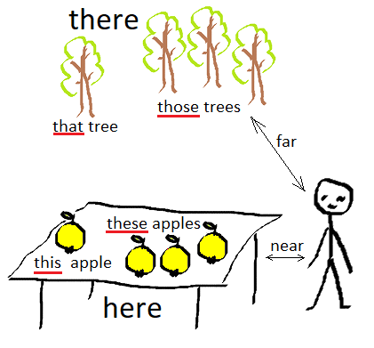

HomeIndex
HomeIndex GitHub
</>
GitHub
</>
Местоимения
| Лицо | Число | Именительный падеж | Объектный падеж | Притяжательное местоимение* |
|---|---|---|---|---|
| 1-е | ед. | I | me | my/mine |
| мн. | we | us | our/ours (наш, наша, ...) | |
| 2-е | ед./мн. | you | you | your/yours (твой, твоя, ...) |
| 3-е | ед. | he | him (его, ему) | his/his (его) |
| ед. | she | her (её, ей) | her/hers (её) | |
| ед. | it | it | its/its | |
| мн. | they | them (их, им) | their/theirs (их) |
* Указываются притяжательные местоимения с притяжательным словом и через "/" — без притяжательного слова. Например, this is my cat — это мой кот; this cat is mine — этот кот — мой. В первом случае притяжательное слово cat следует после притяжательного местоимения, во втором случае после притяжательного местоимения не следует притяжательное слово.
This is my backpack. — whose backpack? Mine. — Это мой рюкзак. — рюкзак чей? Мой.
This house is now yours. — Этот дом теперь твой/ваш.
My hat is blue and your hat is red => My hat is blue and yours is red.
Моя кепка голубая, а твоя кепка красная => Моя кепка голубая, а твоя – красная.
He is in the kitchen, please call him, I have found his watch — Он на кухне, пожалуйста, позови его, я нашла его часы.

Указание предметов
| Число | Здесь | Там |
|---|---|---|
| ед. | this | that |
| мн. | these | those |
Приведенные выше слова могут использоваться в качестве объектов (например, подлежащих или дополнений) и определений, например:
Указание места:
Слова here, there, everywhere используются в одноименной песне "Битлз"